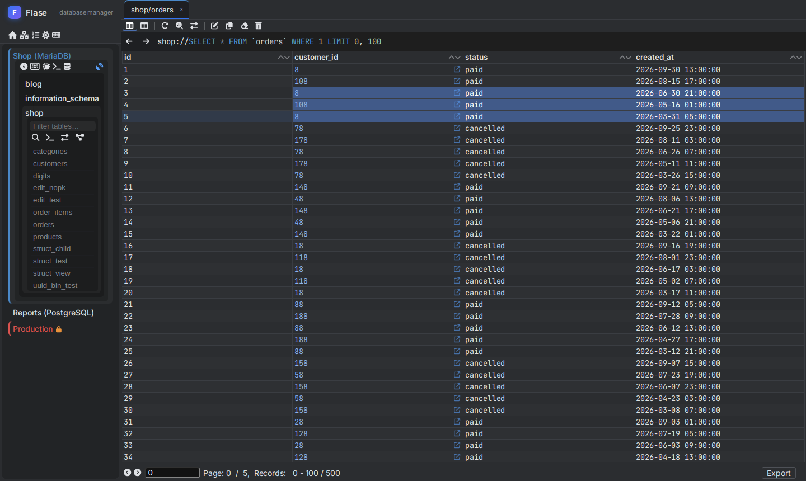
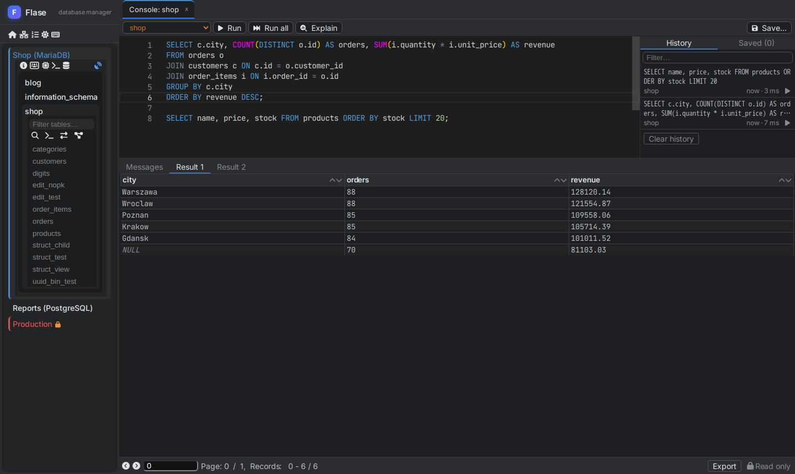
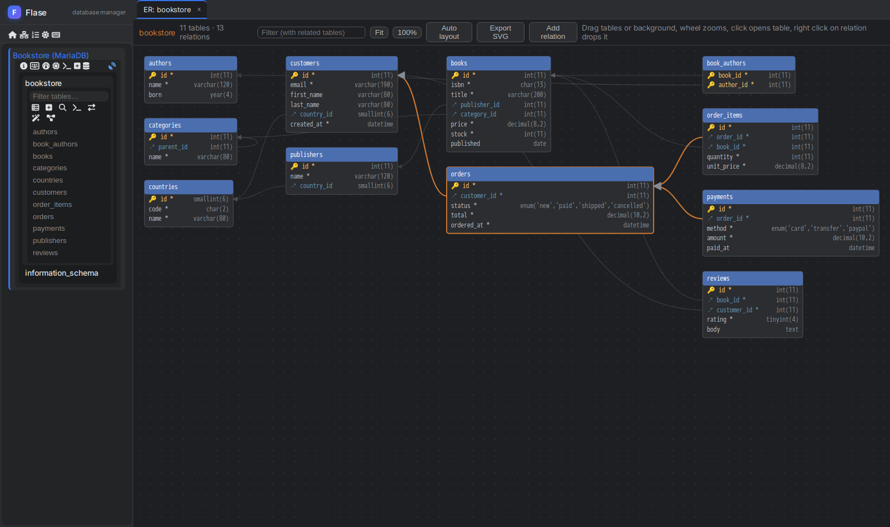
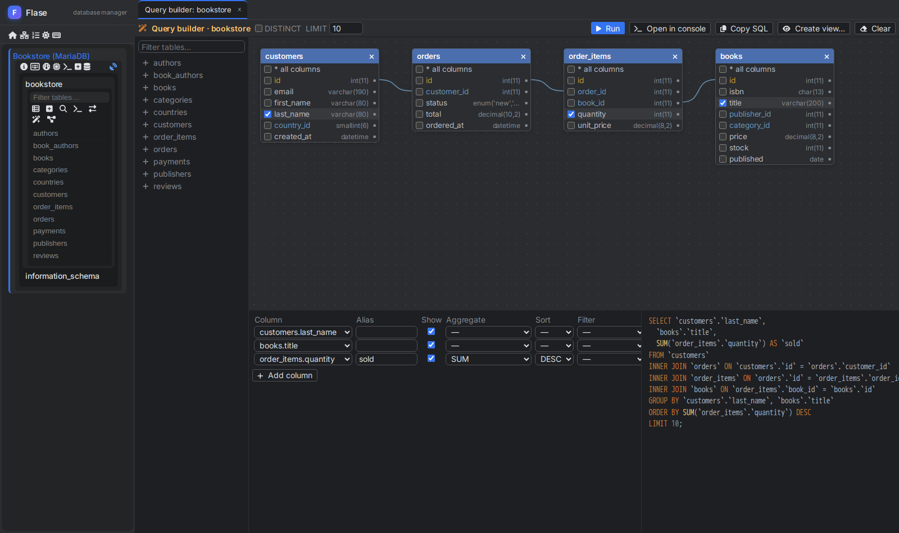
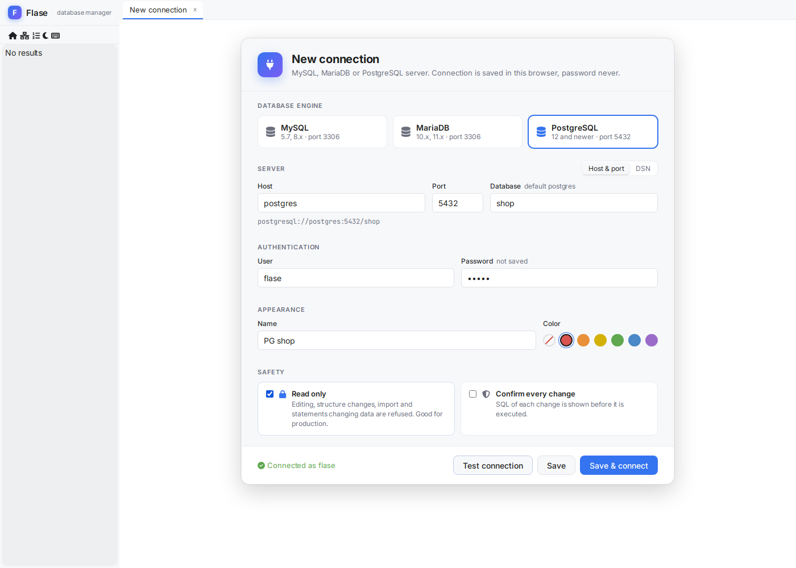

The modern phpMyAdmin alternative for MySQL, MariaDB and PostgreSQL
Flase is a fast, open source web database client with the comfort of desktop tools like DataGrip, DBeaver or HeidiSQL - running in the browser, self-hosted in one Docker container.
- MySQL
- MariaDB
- PostgreSQL
- Free & open source

on 1000 rows
in one interface
one port
AGPL-3.0
Built for everyday work with real databases
The convenience of a desktop database IDE, with the reach of a web application your whole team can open.
Made for daily work
Virtualized data grid with thousands of cells, inline editing, multi selection and keyboard shortcuts.
Safe for production
Read only connections enforced by the server, colored connections and SQL preview of every change.
Works where your database is
Deploy one container next to the database. Connections predefined by administrator, TLS and SSH tunnels built in.
One tool for three engines
The same interface for MySQL, MariaDB and PostgreSQL - no more switching between phpMyAdmin and pgAdmin.
Everything from phpMyAdmin, and much more
Tools you know from desktop database clients, in a browser tab.
Spreadsheet-like data grid
Browse and edit millions of rows as comfortably as a spreadsheet.
- Inline editing with editors for long texts, JSON and binary values
- Pending changes with SQL preview, submit with Ctrl + S
- Copy as TSV, CSV, JSON, Markdown or SQL INSERT; export to Excel, ODS, PDF
- Foreign key navigation, quick filters, multi-column sorting
- Charts of results and maps of spatial values
SQL console with completion
Write, run and understand queries without leaving the browser.
- Monaco editor with completion of tables, columns and keywords
- Many statements in one run, results in tabs, timing and affected rows
- Execution plan as a tree with costs and full scans marked
- Query parameters, history, saved queries and cancel of running queries
- UPDATE / DELETE without WHERE needs confirmation

ER diagram of your database
See how tables are connected and change relations right on the diagram.
- Tables and foreign keys laid out automatically, movable by mouse
- Hover a table to highlight its relations
- Draw a relation between columns - the foreign key is created with SQL preview
- Filter with related tables, zoom and export to SVG

Visual query builder
Build SELECT queries with joins without writing SQL - and learn the SQL on the way.
- Add tables - joins are created from foreign keys, or drawn by mouse
- Pick columns, aliases, aggregates, filters and sorting
- Live SQL next to the canvas, run it in console or save as a view
- INNER, LEFT, RIGHT and CROSS joins from the menu of a line

Structure
- Tables, columns, indexes and foreign keys
- Every DDL statement previewed
- Views, triggers, procedures, events
Import and export
- Streamed SQL dumps, also gzip
- SQL and CSV import with mapping
- CSV, XLSX, ODS, JSON, XML, PDF
Visual tools
- ER diagram with SVG export
- Visual query builder, live SQL
- Schema compare with migration
Server administration
- Live monitor and variables
- Advisor, processlist, replication
- Users, roles and privileges
Your database never faces the browser
Only the Flase server talks to the database - users get exactly the connections you allow.
- TLS / SSL to the database with own CA and client certificates
- SSH tunnel through a bastion or jump host, with host key verification
- Predefined connections with read only mode enforced by the server
- Passwords never stored on the server; optionally remembered in the browser, encrypted with AES-GCM

Faster than phpMyAdmin
Flase renders only visible rows and columns, so large results stay fast. Same MariaDB 11.4 table of 50 columns, Chromium, median of 7 runs - lower is better.
SQL query, 1000 rows × 50 columns - run to rendered rows 25× faster
Browse table, 100 rows - click to rendered rows 5.6× faster
DOM elements on the page, 1000 rows 32× fewer
Flase 0.7, phpMyAdmin 5.2.3. Full results and the benchmark script are in the README on GitHub.
Up and running in one minute
Run one container, open http://localhost:3001 and add a connection like
mysql://db-host:3306 or postgresql://db-host:5432/database.
$ docker run -d --name flase -p 3001:3001 \
-e JWT_SECRET=$(openssl rand -hex 32) \
backen/flase:latest# docker-compose.yml - connections predefined by administrator
services:
flase:
image: backen/flase:latest
ports:
- "3001:3001"
environment:
JWT_SECRET: change-me-to-a-long-random-string
FLASE_CONNECTIONS: >-
[{"name": "Shop production", "dsn": "mysql://10.0.0.5:3306",
"username": "app", "readOnly": true, "color": "#d9534f"}]
FLASE_ALLOW_CUSTOM_CONNECTIONS: "false"All options are described in the configuration section. Image on Docker Hub.
Frequently asked questions
Is Flase free?
Yes. Flase is free and open source software under the GNU AGPL 3.0 license - you can use it also commercially.
How is Flase different from phpMyAdmin and Adminer?
Flase supports MySQL, MariaDB and PostgreSQL in one interface, renders large results much faster, previews SQL of every change and has tools of desktop clients: SQL completion, execution plans, ER diagrams, schema compare, SSH tunnels.
Does it replace pgAdmin?
For everyday work - browsing and editing data, structure, SQL, import and export, users and server monitoring - yes. A connection without database shows all databases with their schemas, like pgAdmin.
Is it safe to use with a production database?
Connections can be predefined by administrator with read only mode enforced by the server, every change is shown as SQL before it is executed, and the database is reachable only from the Flase server.
What do I need to run it?
Only Docker. Flase is one container with the application, API and websocket on one port.
Give your database a better manager
One command, no installation on your computer. Free forever, open source.